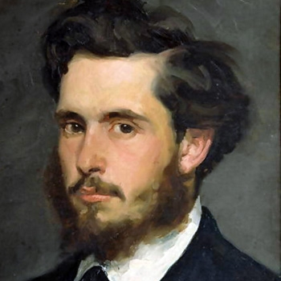

Народився 14 листопада 1840 року в Парижі. Коли хлопчикові було 5 років, родина переїхала до Нормандії, у Гавр. Батько хотів, щоб Клод став бакалійником і приєднався до сімейного бізнесу, але син з дитинства захоплювався образотворчим мистецтвом, зокрема із задоволенням малював карикатури. На морському узбережжі Нормандії Моне зустрів Ежена Будена, відомого пейзажиста і одного з провісників імпресіонізму. Буден показав юному художнику деякі прийоми живописної роботи з натури.
У 1860 році призваний до армії і потрапив до Алжиру, але там він захворів на тиф. Втручання тітоньки допомогло художнику демобілізуватися, і він повернувся додому вже у 1862 році.
Вступив до університету на факультет мистецтв, але швидко розчарувався в пануючому там підході до живопису. Покинувши навчальний заклад, він незабаром вступив у студію живопису, яку організував Шарль Глейр. У студії він познайомився з такими художниками як Огюст Ренуар і Фредерік Базіль. Вони були практично однолітками, дотримувалися схожих поглядів на мистецтво і незабаром склали кістяк групи імпресіоністів.Популярність Моне приніс портрет Камілли Донсьє «Жінка в зеленому», намальований у 1866 році. Вона потім стала дружиною художника, і у них народився син Жан.
Після початку франко-пруської війни в 1870 році їде у Сполучене Королівство, де знайомиться з роботами Джона Констебла і Вільяма Тернера. У березні 1871 року залишив Лондон і став жити в Заандамі (Нідерланди), де він написав 25 картин. Крім того він перший раз побував в сусідньому Амстердамі.
У жовтні або листопаді 1871 року повернувся до Франції. З грудня 1871 по 1878 рік він жив у Аржантейлі, селі на правому березі річки Сени поблизу Парижа, яке було популярним місцем недільного відпочинку для парижан. Там написані деякі з його найвідоміших робіт.
Будинок Моне у Живерні, вид з саду Наприкінці 1872 року пише свій знаменитий пейзаж «Враження. Схід сонця» (фр. Impression, soleil levant). Саме ця картина і дала назву групі імпресіоністів і цілого художнього напрямку. Картина була показана на першій імпресіоністській виставці в 1874 році.
У 1873 році купив невеликий човен і обладнав його для використання як плавучої студії. У цій студії писав пейзажі, а також портрети Едуара Мане і його дружини. Мане, в свою чергу, в 1874 році написав картину, на якій зобразив Моне разом з Каміллою на борту човна.
На початку 1920-х у нього розвивається катаракта, через що йому довелося перенести дві операції. Проте він не залишив занять малюванням. Втративши кришталик на лівому оці, Моне знову відновив зір, але став бачити ультрафіолет як блакитний або ліловий колір, від чого його картини знайшли нові кольори. Наприклад, малюючи знамениті «Водяні лілії», він бачив лілеї блакитнуватими в ультрафіолетовому діапазоні, на відміну від звичайних людей, для яких вони були просто білими.
Моне продовжував працювати до останніх днів свого життя. Художник помер в своєму будинку 5 грудня 1926 року в Живерні й був похований на місцевому церковному цвинтарі. Його будинок та сади були відкриті для відвідування в 1981 році.
Писав свої картини рядами малих кольорових цяток чистих спектральних кольорів, а не змішував їх на палітрі, як зазвичай роблять художники. Він розраховував на оптичне суміщення кольорових цяток в зоровому сприйнятті. Завдяки цьому прийому Моне прагнув створити враження м'якої вібрації повітря, і це надає його картинам абсолютно оригінальний вигляд.
Ранні картини Моне, такі, як «Жінка в зеленому» (1866), «Жінки в саду» (1867), та деякі пізніші — «Міст в Аржантейлі» (1874), «Скелі в Бель-Іль» (1886) — відзначаються свіжістю і багатством колориту. В пізніших творах, наприклад, «Враження. Схід сонця» (1873), «Бульвар Капуцинок у Парижі», (1873), а особливо в картинах останніх років — серія «Стіжки» (1890–1891), «Тополі» (1891—1892), види Лондона (1900–1904) — Моне захопився передачею суб'єктивних, випадкових, скороминучих вражень, самодостатніми експериментами в розкладанні кольорів. Найкращі твори Моне належать до світових надбань живопису.